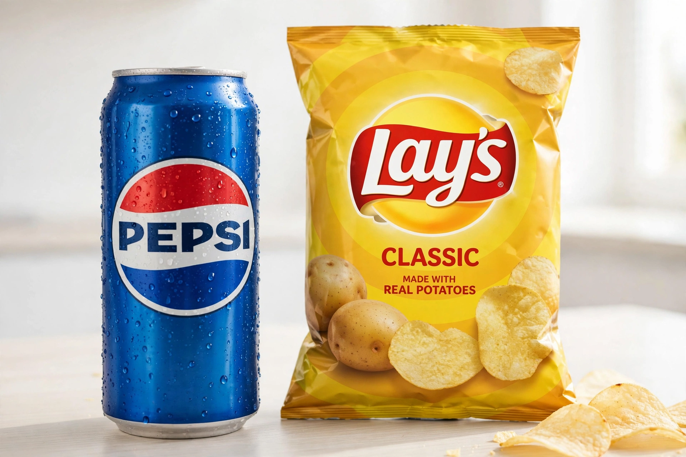

PepsiCo

Image: PepsiCo logo — the blue Pepsi globe beside a Pepsi can and Lay's snack packaging | |
| Type | Public |
|---|---|
| Industry | Food and beverage |
| Founded | August 28, 1898 (Pepsi-Cola); 1965 (PepsiCo merger) |
| Founders | Caleb Bradham (Pepsi); Donald Kendall and Herman Lay (PepsiCo) |
| Headquarters | Purchase, New York, U.S. |
| Products | Pepsi, Mountain Dew, Gatorade, Lay's, Doritos, Cheetos, Quaker, Tropicana (former), Aquafina |
| Revenue | ~US$91 billion (approx., 2023) |
| Employees | ~318,000 (approx.) |
| Website | pepsico.com |
PepsiCo, Inc. is an American multinational food, snack and beverage corporation headquartered in Purchase, New York. Formed in 1965 by the merger of Pepsi-Cola and Frito-Lay, it is one of the world's largest food and beverage companies and the chief global rival of Coca-Cola.
History
Pepsi was created in 1893 by pharmacist Caleb Bradham in North Carolina and trademarked in 1903; the company went bankrupt twice, in 1923 and 1931, before being rebuilt under Charles Guth with a successful 12-ounce bottle sold at the nickel price of the 6-ounce competition.
The 1965 merger with Frito-Lay created PepsiCo. Major acquisitions followed: Tropicana (1998, later partly sold), Quaker Oats with Gatorade (2001), and its two largest bottlers (2010). Indra Nooyi, CEO from 2006 to 2018, steered the portfolio toward "better for you" products; Ramon Laguarta succeeded her.
Operations
The company's divisions include Frito-Lay North America, Quaker Foods, and beverage and food operations across Latin America, Europe, Africa/Middle East and Asia-Pacific. Frito-Lay brands such as Lay's, Doritos and Cheetos give PepsiCo a snacks business far larger than Coca-Cola's, and its products reach more than 200 countries and territories.
See also
Pepsi · Frito-Lay · Indra Nooyi · Cola wars